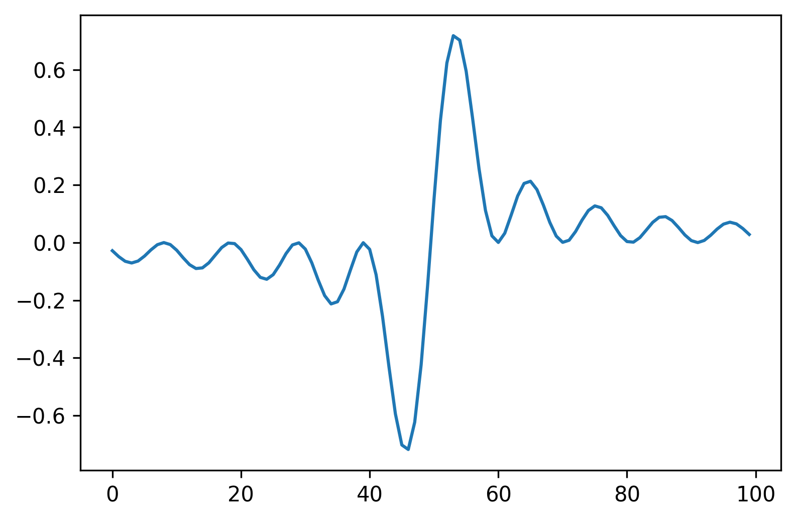

First post in HUGO
Introduction
Meta post about how I do it. I'm using org-mode inside emacs and Hugo.
Images from URL
Use the html export block from org mode. In order to override the theme css for images display I manually inserted the html with a different style="display: revert; max-width: fit-content;". (this depends on the theme you choose)


Graphs from interactive code blocks saved on /static/images1
Using emacs-jupyter together with org-mode babel.
In order to use the generated graph from the code in the blog published with Hugu I did the following:
-
save the figure with source block header argument
:file ../../static/images/graph1.png.2 -
added also
:exports codeto avoid having a broken link in the html, which is automatically generated with ob-jupyter. -
inserted a link to the graph considering the folder structure after published with Hubo
[[file:images/graph.png]]
import matplotlib.pyplot as plt
import numpy as np
x=np.linspace(-15,15, 100)
fig = plt.figure(dpi=300)
plt.plot(np.sin(x)**2/x**2)
Graphs saved in the same folder as the post
This is the most convenient organization scheme.
I create a new folder for each post that will have pictures.
Inside this folder the post goes on a index.org file.
And the figures are generated automatically with emacs-jupyter, I just changed the default directory variable to (setq jupyter-org-resource-directory "./jupter/").
import matplotlib.pyplot as plt
import numpy as np
x=np.linspace(-15,15, 100)
fig = plt.figure(dpi=300)
plt.plot(np.sin(x)**2/x)
Dataframes from interactive jupyter-python code blocks
import pandas as pd
data = [[1, 2], [3, 4]]
DF = pd.DataFrame(data, columns=["Foo", "Bar"])
print(DF)Foo Bar 0 1 2 1 3 4
Python code block
If I want python syntax highlight but using jupyter-python src blocks I need to change the language of the source block when I finish the post.
import numpy as np
a = np.linspace(3, 2)Figures from clipboard
Using org-download with imagemagick convert command.
The workflow is to just use the snipping tool from windows and use the org-download-clipboard function inside emacs org-mode.
Right now I still need an easy way to control the image width, it seems that hugo can not understand #+attr_html parameters.
Equations
I had to just enable math=True in my hugo .toml config file under site params.
-
using double
$$centering equations $$ f(x) = \int_0^1 x^2 d x $$ -
single
$for inline $ x^2 $
Stylized balance sheets from ditaa
Well, this works. However it is too time consuming.
/------------------\
|Federal Reserve |
+--------+---------+
|assets |liabilit |
+--------+---------+
|c1AB | cPNK |
|JPY | USD |
|reserves| reserves|
|at BoJ |to BoJ |
+--------+---------+Youtube
in org-mode just the link does not do anything. We can use the markdown syntax also.
https://www.youtube.com/watch?v=a5PF2PcElV0